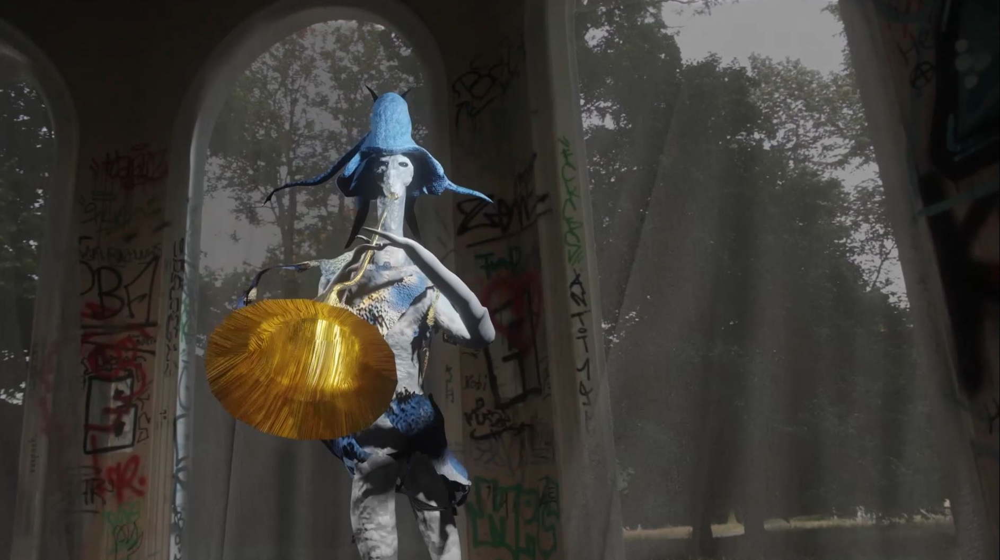
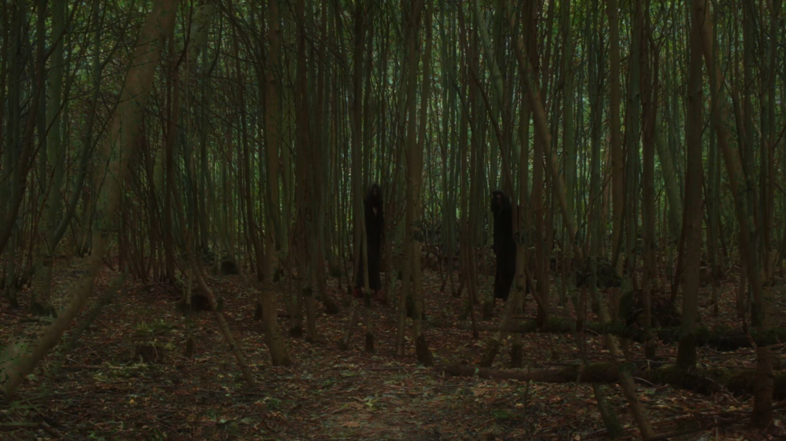
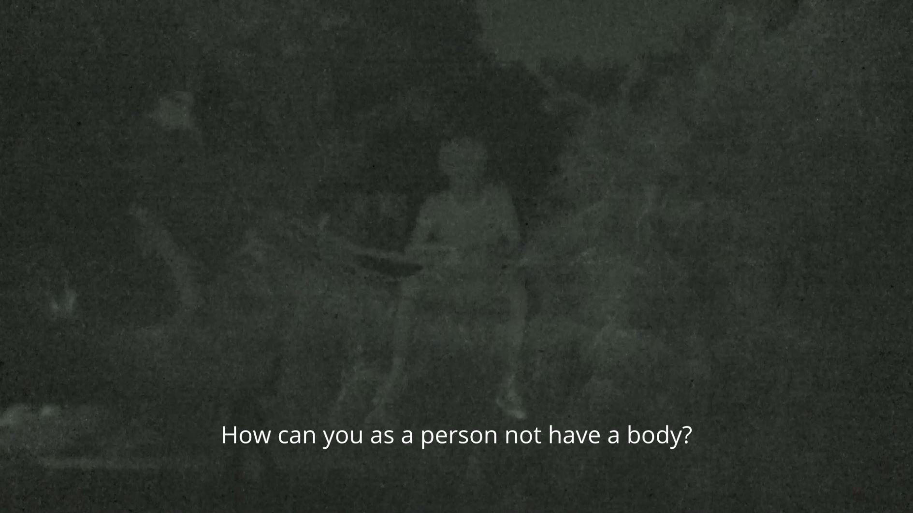

As you wake up in the morning is the result of a dream diary that various artists kept together in a Google Doc during the 2020 Covid pandemic, created to stay in touch with each other during lockdowns and to document the heightened awareness of inner dream states when the outside world was unreachable.
Co-produced with artist Haiguang Li, the 10-minute video chronicles two of our dreams in a fairytale fashion, intertwining them through a dialogue. The film blends animation with real-world footage, creating a space where dream and reality coexist. At its core, the video explores the fluidity of bodies, shapeshifting, and traveling through states of being.
A master in conversation with his apprentice:
“Where are you going?”
“Into another body.”
The video was part of the exhibition
a means to an end, the value of social interaction
in basement.berlin.
Intro:


